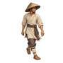
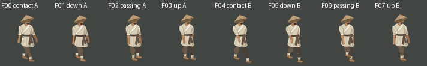
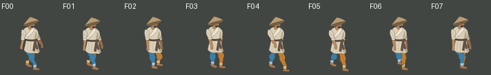

Blue: near anatomical RIGHT
Ochre: far anatomical LEFT

reference separately displayed

not selected passing A
Original rough authoring only, 0 image calls. Eight75ms phases /600ms. F02/F06 revised; other six complete drawings are bound actual162 sources. No final illustration or motion approval.

D0 world+X projects screen(+1,+0.5). "Far" means depth behind the near leg, not backward along travel. Revised swing heels reach their own longitudinal foot lane with relaxed lift. Colored controls are authoring labels, never final textures.

